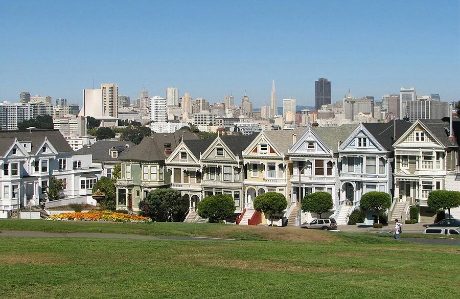

Alamo Square
- Fenced No — open lawn off-leash zone (natural park boundaries)
- Water Unknown — bring your own
- Small-dog area No dedicated section verified
- Hours Park hours generally dawn–dusk; follow posted signs
Iconic Painted Ladies backdrop. Off-leash only in the designated play area — leash elsewhere in the park and on sidewalks.